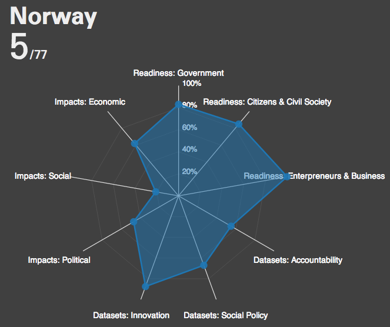
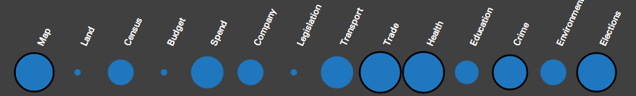
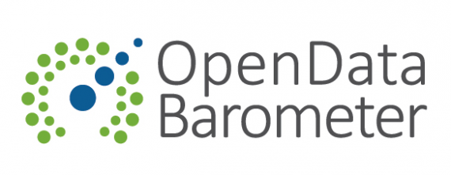

The Open Data Barometer takes a multidimensional look at the current adoption level of open data policy and practice around the world. Three main categories are considered as part of the baraometer:
- Readiness - identifies how far a country has in place the political, social and economic foundations for realising the potential benefits of open data. The Barometer covers the readiness of government, entrepreneurs and business, and citizen and civil society.
- Implementation - identifies the extent to which government has published a range of key datasets to support innovation, accountability and more improved social policy. The barometer covers 14 datasets split across three clusters to capture datasets commonly used for: securing government accountability; improving social policy; and enabling innovation and economic activity.
- Emerging impacts - identifies the extent to which open data has been seen to lead to positive political, social and environment, and economic change. The Barometer looks for political impacts – including transparency & accountability, and improved government efficiency and effectiveness; economic impacts – through supporting start-up entrepreneurs and existing businesses; and social impacts – including environmental impacts, and contributing to greater inclusion for marginalised groups in society.
These factors have been combined onto a Radar chart, this represents the countries barometer.

Barometer for Norway, ranked 5th out of the 77 countries surveyed.
Key Datasets
Key to the success of open data usage is the availability of a number of "core" open datasets. These fall into a number of categories such as transport, crime and environment. The open data barometer identifies a number of these categories and provides an evaluation on the availablity and usability of each dataset per country surveyed.

Key dataset availability in Australia.
Key
Circle size represents openness score.
Further resources
- The Open Data Barometer - The original report and datasets from which the visualisation on this site is made.
- OKFN Census - The Open Knowledge Foundation census, a live look at the availability of key open datasets around the world.
- Open Data Rediness Assessments - The World Bank programme that provides countries with a framework to develop a plan of action for improving their open data provision and usage.
Partners

